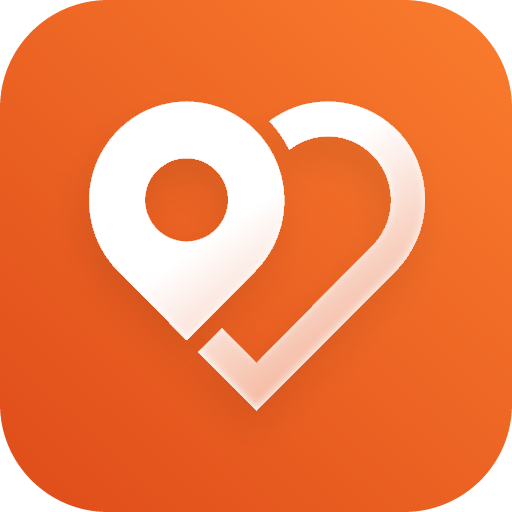

Report in one press with AI, a map that reads like Bolt, and a lot of small things that finally behave.
17 October 2026 · Neibo alpha test
This release runs on the same runtime as 3.0 (Expo SDK 57). If 3.0.1 opened for you, 3.1.0 will too — just reopen the app. Still seeing "Project is incompatible"? Then your Expo Go is older than SDK 57: update it from the App Store or Google Play.
NEWHold «+» to snap. Press and hold the «+» button: the camera window flies out of it, and the photo is taken the moment you let go. Slide left to cancel. A plain tap still opens the camera the usual way.
While holding, slide down for the ultra-wide lens and up to zoom in. On Pro iPhones zooming switches to the telephoto lens on its own.
NEWAI fills in the report. The photo goes to the AI, which picks the category and type and writes a short description — as a message to your neighbours, not a caption under a picture. The place is set from where you stood.
NEWIt asks when it's not sure. If the photo could mean two different things, you get one quick question instead of a wrong guess.
NEWPublishes itself when it's sure. A confident report shows a card with a 5-second «Publish» countdown — tap to send now, or cancel. Don't want that? Turn off Auto-publish in Settings.
NEWNothing gets lost. If the app closes in the middle of a report, it offers to finish it the next time you open Neibo. Closed a report by accident? A toast lets you bring it back.
NEWAbout 280 types in three levels. Category → type → optional detail, so a crash can say how bad it is and a fire can say where it is burning — a flat, a balcony, a stairwell. Search inside the picker by any word.
NEWTwo new categories. Need help — for when someone nearby needs a hand — and Roads & transport, including ticket inspectors and police posts.
NEWTitles that read like a sentence. Events are called «Serious crash», «Bike stolen» or «An elderly person needs help», not by the name of a menu item.
NEWNo more clusters. Every event keeps its own place: a dot when you see the whole city, a bigger dot closer in, an icon at street level and a flag with its title right up close. Markers change smoothly as you zoom, without jumping or blinking.
NEWThe selected pin shows what happened. It carries the category icon, appears the instant you tap, and moves along as you swipe through the cards.
NEWA crisp radius circle. The «Nearby» circle is now a sharp dashed line at any zoom, and it hides itself when you zoom far out.
NEW«Where am I» in two steps. The first tap brings you back to the centre, the second zooms to street level. When you are already there, the button gets out of the way.
NEWA bell that knows what's new. A dot on the bell tells you something new happened inside your radius.
NEWNew name, new markers. The tab is now called Places. On iPhone the map uses the same dot → icon → flag markers as the event map; Android keeps the old clusters for now.
NEWSearch by cuisine. Type «sushi», «pizza» or «shawarma» and get places that serve it.
NEWChoose a type from cards. A grid of place types, and the app remembers the last one you picked.
NEWNothing hides off-screen. «N places outside the map · Show» brings them into view in one tap. «Route» lets you choose the navigator.
NEWReplies, likes and dislikes. Comments work like in TikTok: reply to someone, like or dislike, sort by newest or most relevant.
NEWBlock a person. From their profile («⋯» at the top). Their events and comments disappear for you.
NEW«Near me» in the feed. The feed can show just your radius, with the distance on every row. News tells you how many days ago it was last updated.
NEWA clearer first screen. «Create account» or «I have an account» — no more guessing whether you are signing in or signing up.
NEWSave your guest account. As a guest, your nickname, points and reports live on this phone only. «Save account» ties them to your email, so they survive a new phone.
NEWAbout Neibo, Language and Delete account in Settings. Russian is selected; Latviešu is coming.
NEWFewer pop-ups on first launch. The system notification prompt no longer jumps at you right away, and location is asked after you pick a nickname.
FIXThe Neibo font, everywhere. Most text was quietly falling back to the system font. Now the whole app uses Manrope, as designed.
FIXLarge text works. With bigger text in iOS settings, cards, lists, filters and the profile wrap properly instead of cutting words or overlapping.
NEWReduce Motion is respected. With it on, the camera window and «+» stop flying and stretching and simply fade.
NEWSmall hints, once. A pill above «+» tells you that you can hold it, and the first event card nods once to show it can be swiped.
FIXA report can't be published twice — a second tap on a slow network now opens the event you already posted.
FIXA comment that failed to send no longer pretends it was sent.
FIXA photo that didn't load shows the category tile instead of an empty box.
FIXThe card after a quick snap no longer shows an empty thumbnail.
FIX«Back» from event details or a profile returns to the same card, and «Show on map» returns to the tab you came from.
FIXThe Nearby sheet no longer says «0 events» while it is still loading.
FIXThe map no longer moves on its own while you are on another tab.
FIXDragging the report pin with a finger moves the place again on iOS.
The server decides, not the app. Event status, the «verified» badge and how long an event stays on the map are now set by the server. A modified app can't make its own reports look verified or keep them up forever.
Photos are handled more carefully. A photo that is still used by an event or a moderation decision can't be deleted, and an event can't be published with a photo that has gone missing.
«Delete account» isn't live yet. The button is there and explains what will be removed; the server part arrives in one of the next updates.
Sign in with Apple or Google is not switched on yet. Email and guest accounts work.
Places on Android still use clusters. The new markers are iPhone-only for now.
The one-press camera was tested on iPhone. Android testers, tell us how holding «+» behaves on your phone.
Push notifications still don't arrive in Expo Go. Alerts work inside the app; system notifications need a standalone build.
The Latvian interface is not ready yet.
Updates arrive automatically — just reopen the app.
If it still looks old, fully close Expo Go and open it again.
Not in the alpha yet? Join here